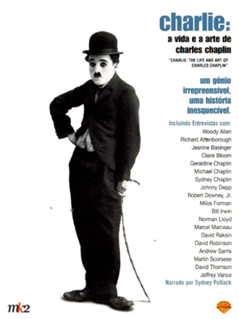
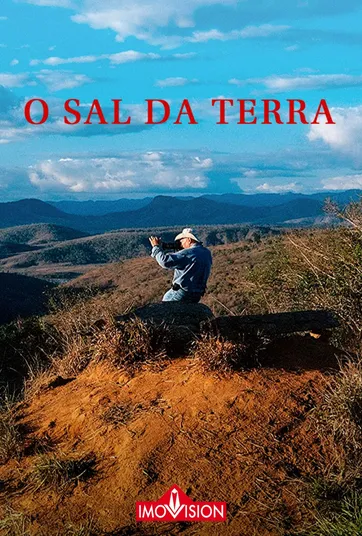

- Emicida: Amarelo - É Tudo pra Ontem Sinopse
- Charlie: A Vida e a Arte de Charles Chaplin  Sinopse
- Senna: O Brasileiro, O Herói, O Campeão
- O Sal da Terra  Sinopse
- Amy Sinopse
Emicida: Amarelo - É Tudo Pra Ontem é um filme documentário brasileiro que estreou em 2020. O documentário foi produzido pela Netflix em parceria com o Laboratório Fantasma.
NetflixCharlie: The Life and Art of Charles Chaplin é um documentário biográfico americano de 2003 escrito e dirigido pelo crítico de cinema Richard Schickel. O filme explora a vida pessoal e profissional do ator, comediante e cineasta britânico Charlie Chaplin, bem como seu legado e influência.
Indisponivel Sinopse
Sinopse
Um documentário sobre o maior piloto brasileiro de Fórmula 1, Ayrton Senna, que ganhou o campeonato mundial três vezes antes de morrer tragicamente aos 34 anos de idade.
Prime video Netflix GloboplayConheça a trajetória do renomado fotógrafo brasileiro Sebastião Salgado, desde seus primeiros trabalhos em Serra Pelada, o registro da miséria na África e no Nordeste do Brasil até sua obra-prima, "Gênesis".
GloboplayImagens de arquivo e depoimentos de pessoas próximas revelam um retrato íntimo da vida e carreira da cantora e compositora britânica Amy Winehouse.
Indisponivel